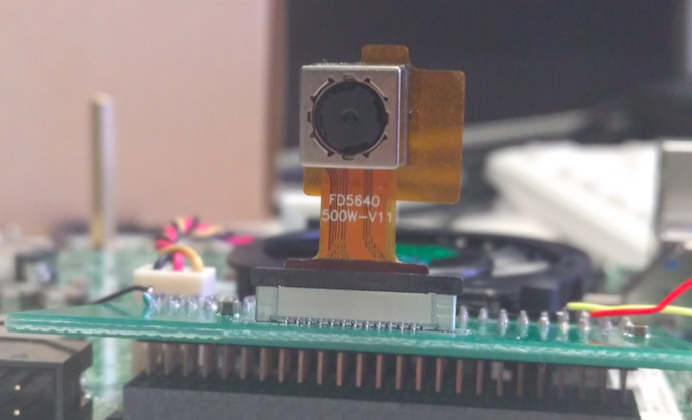
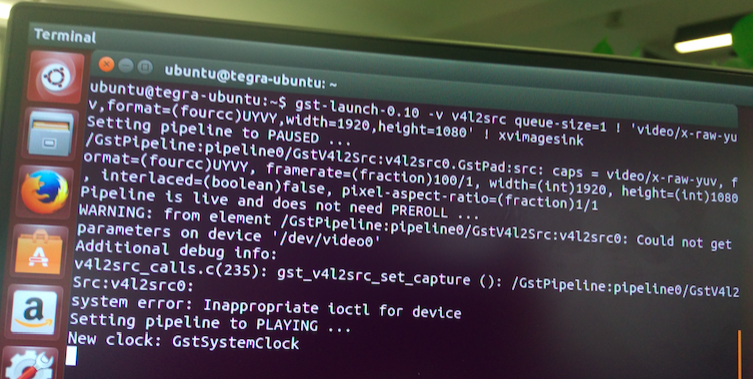

Jetson TK1 Tegra K1 摄像头 MIPI CSI-2 模块 OV5640
模块购买，建议淘宝 梦琪游戏资源店。“卖家不光卖东西，还非常耐心细致的回答好多问题”。
TK1 Camera MIPI CSI-2 模块实物图

安装过程
准备 0
cd ~ && mkdir tegra && cd ~/tegra
wget http://developer.download.nvidia.com/embedded/L4T/r21_Release_v4.0/Tegra124_Linux_R21.4.0_armhf.tbz2
wget http://developer.download.nvidia.com/embedded/L4T/r21_Release_v4.0/Tegra_Linux_Sample-Root-Filesystem_R21.4.0_armhf.tbz2
nkernel.tar.gz：内核（建议联系我 或 从卖家获取），存到 ~/tegra 目录
步骤 1
sudo tar -xif Tegra124_Linux_R21.4.0_armhf.tbz2
cd Linux_for_Tegra/rootfs
sudo tar -xipf /home/ubuntu/tegra/Tegra_Linux_Sample-Root-Filesystem_R21.4.0_armhf.tbz2
步骤 2
cd ..
export LDK_ROOTFS_DIR=/home/ubuntu/tegra/Linux_for_Tegra/rootfs
sudo ./apply_binaries.sh
步骤 3
sudo apt-get install gcc-arm-linux-gnueabihf build-essential
步骤 4
cd ~/tegra
tar -xif /home/ubuntu/tegra/nkernel.tar.gz
cd nkernel/
步骤 5
ARCH=arm make tegra12_defconfig
ARCH=arm make menuconfig
如
ARCH=arm make menuconfig执行失败，需apt-get install libncurses5-dev
然后进行配置：
开启 下面 1 项（有点疑问，这里选 Y or M ？目前是两种都可以）
Device Drivers > Multimedia support > Sensors used on soc_camera driver > ov5640 camera support
关闭下面 2 项
Device Drivers > Multimedia support > V4L platform devices > OV5640 camera sensor support Device Drivers > Graphics support > Tegra video input host1x client driver
然后保存退出
步骤 6
设置环境变量
export LDK_ROOTFS_DIR=/home/ubuntu/tegra/Linux_for_Tegra/rootfs/
export LDK_DIR=/home/ubuntu/tegra/Linux_for_Tegra/
步骤 7
ln -s ~/tegra/nkernel/include/dt-bindings ~/tegra/nkernel/arch/arm/boot/dts/include
执行下列命令
ARCH=arm CROSS_COMPILE=arm-linux-gnueabihf- make zImage -j4
ARCH=arm CROSS_COMPILE=arm-linux-gnueabihf- make modules -j4
ARCH=arm CROSS_COMPILE=arm-linux-gnueabihf- make dtbs -j4
sudo ARCH=arm CROSS_COMPILE=arm-linux-gnueabihf- make modules_install INSTALL_MOD_PATH=$LDK_ROOTFS_DIR
sudo cp arch/arm/boot/zImage $LDK_ROOTFS_DIR/boot
sudo cp arch/arm/boot/zImage $LDK_DIR/kernel/zImage
sudo cp arch/arm/boot/dts/tegra124-jetson_tk1-pm375-000-c00-00.dtb $LDK_DIR/kernel/dtb/
sudo cp arch/arm/boot/dts/tegra124-jetson_tk1-pm375-000-c00-00.dtb $LDK_ROOTFS_DIR/boot/
步骤 8
- 装上 SCam-TK1 模块，usb 连接 开发机和 TK1。开发机上 执行
lsusb查看是否ok。 - 按住开发板上头的 FROC ERECOVERY 同时按下 Reset 键 进入恢复模式...确定进入恢复模式后执行下面语句，开始烧录。
cd $LDK_DIR/
sudo ./flash.sh jetson-tk1 mmcblk0p1
注意事项：注意开发机磁盘空间是否够用。预防因磁盘空间不足中断。
步骤 9
- 刷完以后，登录 TK1 机器，进入开发板桌面系统
执行
sudo modprobe tegra_camera至此 摄像头驱动加载完成，可以用 V4L2 访问摄像头
可以用
gst-launch-0.10 -v v4l2src queue-size=1 ! 'video/x-raw-yuv,format=(fourcc)UYVY,width=1920,height=1080' ! xvimagesink
命令进行测试。
注意事项：如 4 执行失败，可尝试是否安装以下开发库
sudo apt-get install libv4l-dev
sudo apt-get install v4l-utils
sudo apt-get install gstreamer-tools
参考
调试
问题描述：
在 “步骤 9” 命令测试时，报错且卡死。

调试过程：
确认是否内核编译过且刷成功
查看dev下面有几个video 开头的设备
ls /dev/video*测测 i2c 电压是否正常，正常值是 1.8
拿 i2c tools 看看能扫到ID不
sudo apt-get install i2c-tools i2cdetect -y 0lsmod查看都加载了哪些模块重启TK1 然后以 root 身份执行
su echo 20 > /proc/sys/kernel/printk modprobe tegra_camera gst-launch-0.10 -v v4l2src queue-size=1 ! 'video/x-raw-yuv,format=(fourcc)UYVY,width=1920,height=1080' ! xvimagesink
注意事项：Ubuntu 下设定 root 密码 sudo passwd root